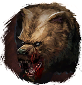
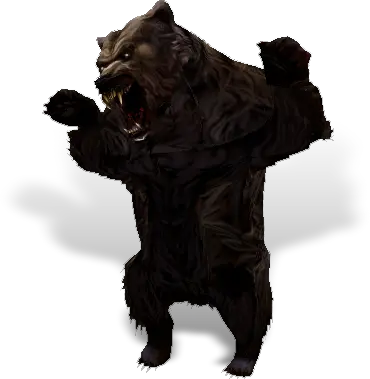
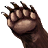
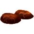

Открыть в интерактивной вики →

| Уровень | 75 |
|---|---|
| Зоны атаки | ближняя, дальняя, ментальная |
| Шанс дропа 100% — уровни | 1-45 |
| Шанс дропа 90% — уровни | 46-55 |
| Шанс дропа 70% — уровни | 56+ |
| Группа боссов | Непокой |
| Сила (PvE) | 2437 |
| Аспект арены | Farao |
| Здоровье | 9200 |
| Мана | 3500 |
| Выносливость | 3500 |
Команда

Навыки


Дроп

Лапа медведя Элементарный глиф
Элементарный глиф  Ученический глиф
Ученический глиф 
 Путь страха
Путь страха 

 II
II | Рары | Синергетики | Эпики | |||
 Рары Рары  Рары Рары  Рары Рары | 20 ур. |  | |||
Прочее:  Путь страха Путь страха  Лапа медведя Лапа медведя | |||||
Требования для входа
все сложности:

Свежее мясцо ×1Путь по картам
Статистика
 |  |  | |||
| Уровень: - | Уровень: 75 | Уровень: - | |||
Здоровье: - Мана: - Выносливость: - | Здоровье: 9 200 Мана: 3 500 Выносливость: 3 500 | Здоровье: - Мана: - Выносливость: - |
Умения
| Удар Головой Кровотечение Таран | Землетрясение | Ярость Паника |
Локация
Берлога
Иммунитеты / особые умения
-